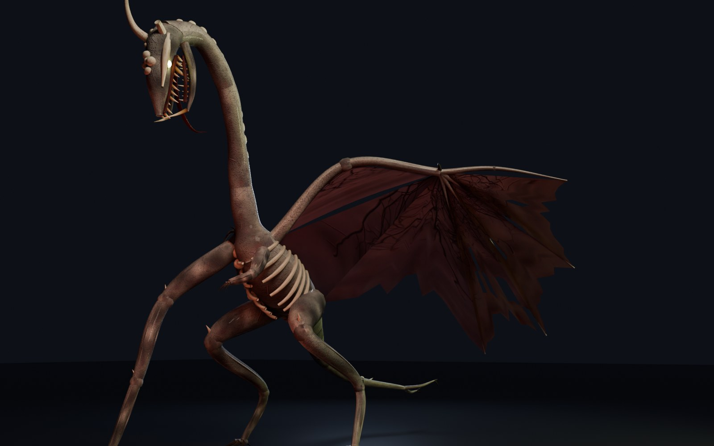
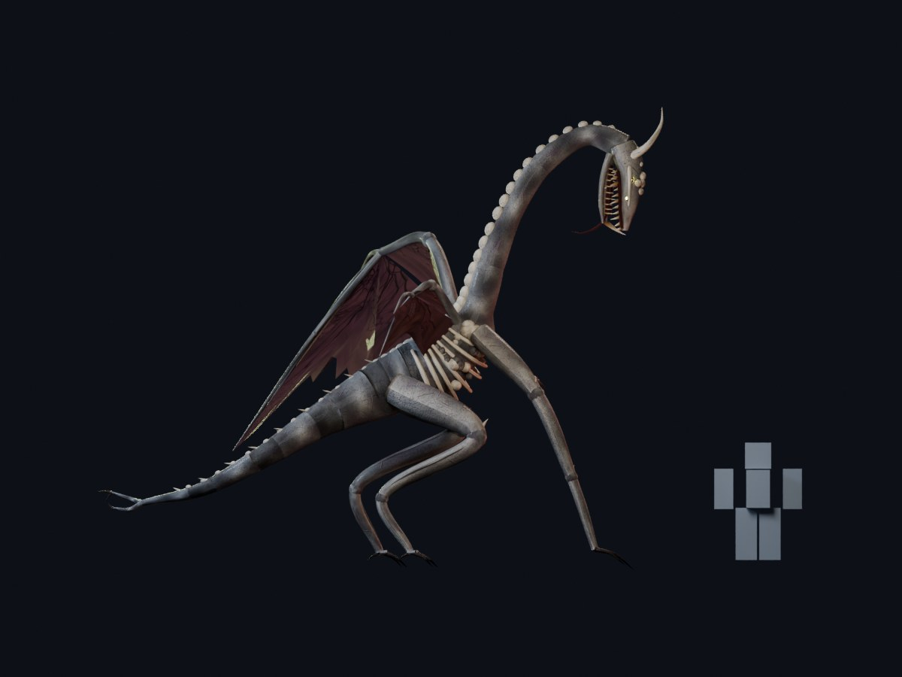
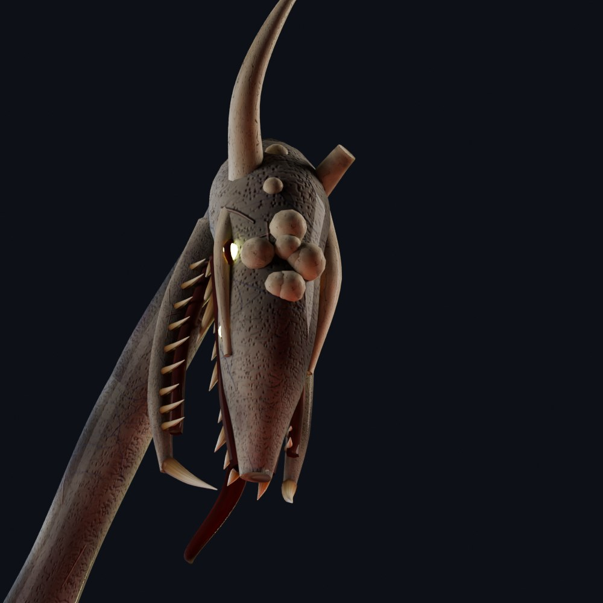
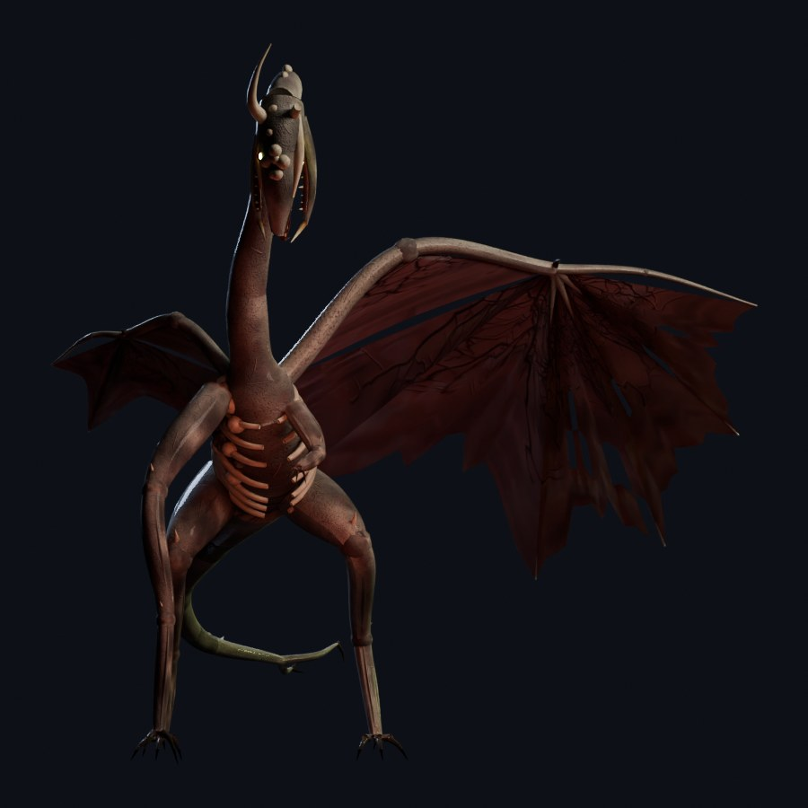
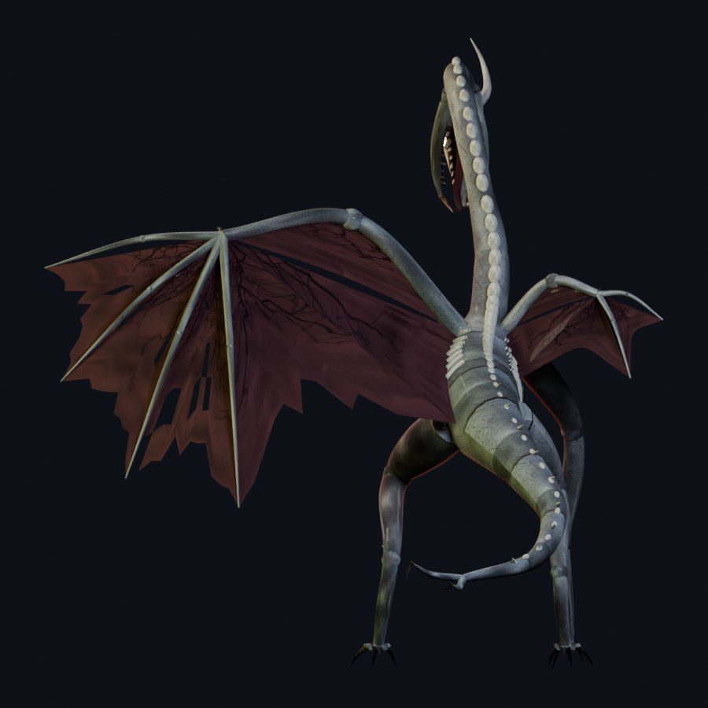
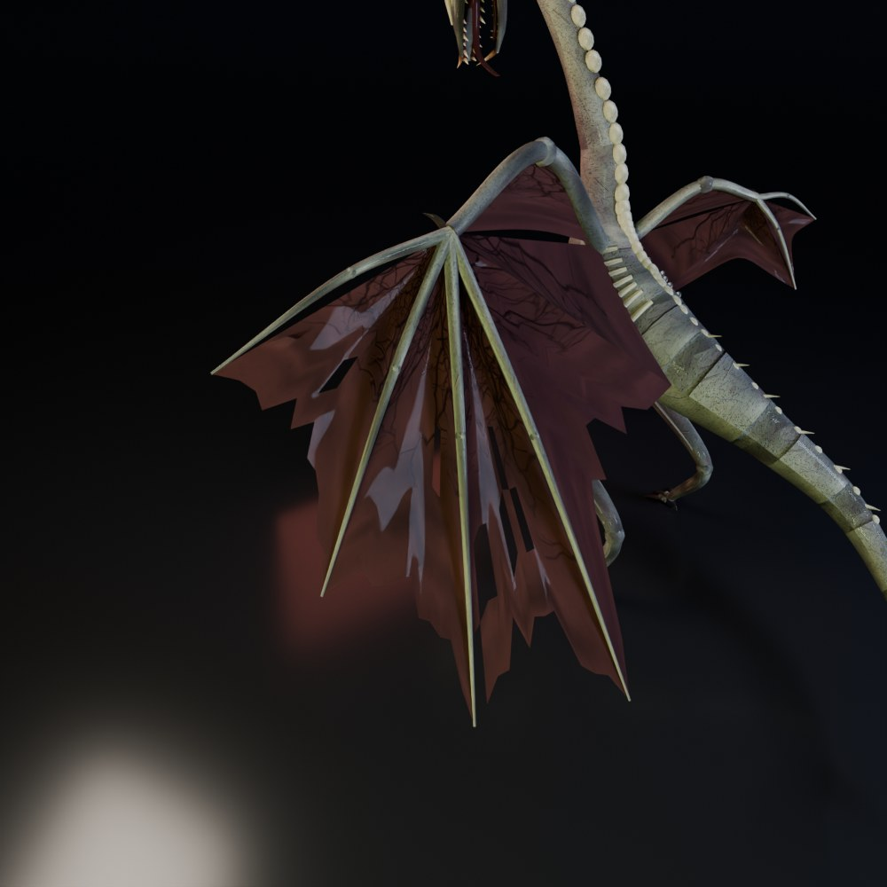
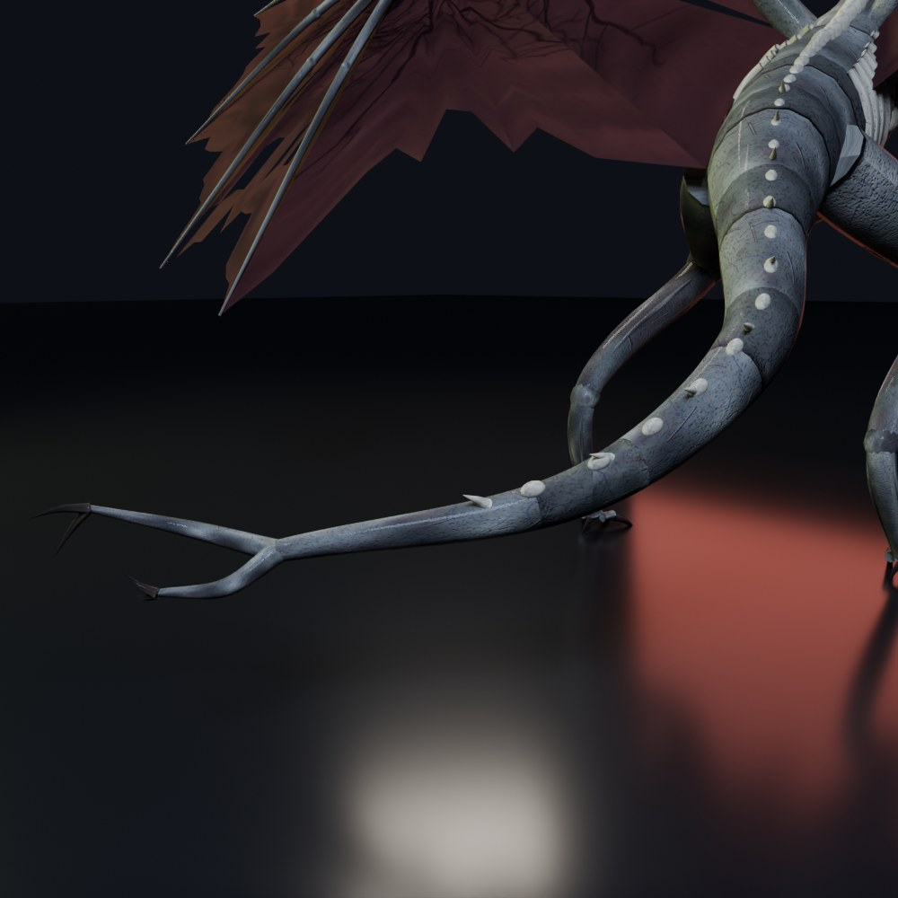

Una especie que creció mal a propósito. Camina sobre zancos digitígrados y se apoya en un brazo largo como si fuera una muleta. Alza un cuello de nueve studs del que cuelga la cabeza. Ningún lado de su cuerpo coincide con el otro.
#bdb7aa#5a2f3c#ddd0b9#6b3b3c#4a1418#d6ff5aEste visor usa la misma geometría, las mismas texturas y los mismos datos de animación que el paquete de Roblox. Una prueba automática confirma que el animador Luau calcula los mismos ángulos que este visor. Arrastra para girar la cámara.
«Esqueleto» muestra los 30 pivotes de Motor6D y sus uniones: así quedará articulado en Studio.






El rig es segmentado: una MeshPart por hueso, unida a su padre por un Motor6D. Es el mismo sistema que usan los personajes R15 y Studio lo anima sin problemas. Las piezas se solapan en cada unión para que no se abran huecos al rotar. El pivote de cada Motor6D se guarda en rig.json y el instalador lo reconstruye.
Root (ancla, invisible) └─ Hips ├─ Chest │ ├─ Neck1 ─ Neck2 ─ Neck3 ─ Head │ │ ├─ JawL · JawR · Tongue │ │ └─ Eye1 · Eye2 · Eye3 │ ├─ ArmR_Upper ─ ArmR_Fore ─ ArmR_Hand │ ├─ ArmL_Upper ─ ArmL_Fore │ ├─ WingL_Arm ─ WingL_Hand │ └─ WingR ├─ LegL_Thigh ─ LegL_Shin ─ LegL_Foot ├─ LegR_Thigh ─ LegR_Shin ─ LegR_Foot └─ Tail1 ─ Tail2 ─ Tail3 ─ Tail4
| Pieza (MeshPart) | Padre | Triángulos |
|---|
Avatar › Import 3D (o Home › Import 3D) y elige AberrantDragon.fbx. En el importador deja Rig Type en No Rig y no combines las mallas. Pulsa Import.View › Command Bar, pega todo InstallAberrant.lua y pulsa Enter. La salida indicará la escala detectada y el error de posición.Workspace.DragonShowcase aparece el dragón con una barra de botones; también puedes usar las teclas 1 a 9.MAPS al principio del instalador y vuelve a ejecutarlo para tener relieve y brillo PBR.